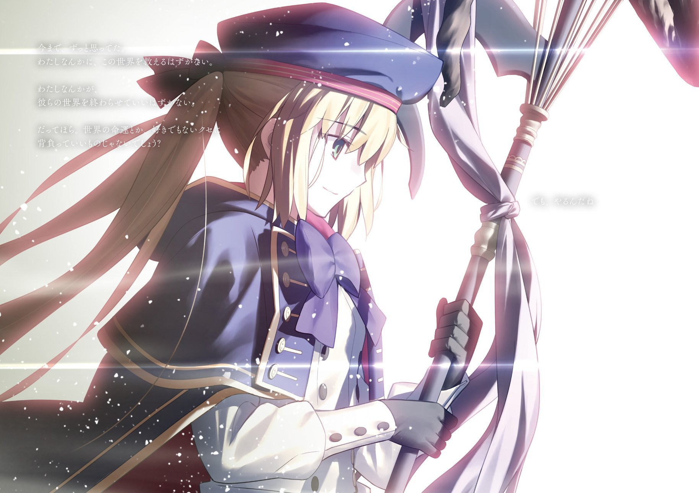

Hi Namaku!!
Naufal Kemal Athilla
Halo semuanya!! Perkenalkan nama saya Naufal Kemal Athilla. Bisa dipanggil kemal. Saya adalah mahasiswa dari fakultas Ilmu Komputer Universitas Jember, prodi Sistem Informasi. Sekarang saya menempuh semester 4. Saya adalah Aspiring Programer yang siap terjun ke dunia perkodingan. Berikut adalah website saya!!

|  |
Experience Gua!! |
|
|
|
|
|
|
Servant - Servant FGO Gue

Artoria Caster
“Because I'm just a normal village girl, that's why!”
Artoria Caster, The Child of Prophecy, adalah servant art Offensive peringkat atas. Memiliki NP Charge (hingga 30% untuk seluruh tim dan 50% untuk target tunggal) serta modifier NP Gain Arts yang sangat tinggi, membuat damage dealer art dapat menggunakan NP dengan cepat selama 3 turn.
Selain itu ia memiliki damage modifier yang bagus menggabungkan peningkatan Performa Arts dari Sword of Selection dengan beberapa buff Peningkatan Serangan dari Charisma of Hope dan NP-nya, Around Caliburn, ditambah dengan damage superefektif terhadap musuh dengan trait Threat to Humanity.
Tidak Hanya itu, skill 3 nya juga bisa memberikan invicible 1 turn untuk 1 servant lini depan dan buff Enforcement Defense dari Around Caliburn, yang pada dasarnya adalah efek Invincible multi-hit untuk seluruh tim, dengan tambahan efek bahwa buff ini tidak terpengaruh oleh Ignore Invincible.
Oberon Vortigen
“Since you summoned me, I'll lend you a hand. Although from the bottom of my heart, it feels like crap.”
Sebagai Raja Peri, Oberon adalah pendukung sekaligus dealer damage AoE Buster yang merevolusi NP looping di Fate/Grand Order. Ia unggul dalam NP Charge dengan Evening Shroud EX (20% NP ke tim + NP Damage) dan Morning Lark EX (50% NP ke satu target dengan penalti -20% NP).
Skill Ending of Dreams EX meningkatkan 50% Buster Performance dan memperkuat buff NP Damage untuk satu giliran, tetapi target terkena Sleep dan Taunt setelahnya, ideal untuk serangan pamungkas.
Sebagai damage dealer, NP-nya Rye Rhyme Goodfellow E memberikan bonus damage ke musuh Lawful, menghapus buff mereka, dan menerapkan Sleep. Fleksibel sebagai pendukung atau sub-DPS, Oberon sangat berharga dalam berbagai strategi.
Scáthach-Skaði (Ruler)
“Hm? What is it? Did you really bring ice cream? You do not have that much free time… No, fine. All right. Good way of thinking. Then I shall eat it. Ufufu.”
Musim panas adalah waktu yang sempurna untuk es krim, dan siapa yang lebih cocok untuk merayakannya selain Queen of Ice yang disuarakan oleh Mamiko Noto! Sebagai Ruler, Skadi menjadi Servant AoE Quick Damage & Support yang juga efektif dalam situasi Buster.
Skadi bisa digunakan dalam tiga cara:
Quick Looping – Mengombinasikan Primordial Rune (Midsummer) dan True Summer's Ice Cream C dengan NP Charge dari Lost in Thought Late on a Summer's Night A+ untuk memungkinkan AoE Quick Servant melakukan looping, bahkan dengan Black Grail.
Buster Crit – Memanfaatkan absorb bintang untuk Buster dari Lost in Thought Late on a Summer's Night, buff Buster dari True Summer's Ice Cream, dan Crit Buster besar dari Primordial Rune (Midsummer).
Damage Dealer – NP-nya, Gate of Aegir, memiliki bonus damage terhadap musuh Lawful.
Kelemahannya terletak pada daya tahan yang rendah, kebutuhan investasi tinggi untuk Quick looping, dan kurangnya absorb Crit jangka panjang.
Bagi Master yang ingin Quick looping atau memaksimalkan Crit Buster, Skadi adalah tambahan yang berharga. Bahkan Sei (Berserker) sudah tidak sabar menunggu kehadirannya!
Koyanskaya of Light
“Think of me as simply a hypercompetent sexy secretary bunny!”
Koyanskaya selalu suka mengubah segalanya jika itu menguntungkan dirinya. Kali ini, ia mengguncang meta dengan membuat Buster NP looping, sekaligus menguras Saint Quartz para Master NA!
Sebagai salah satu pendukung Buster terbaik, Koyanskaya memungkinkan looping NP Buster berkat Innovator Bunny, yang memberikan NP charge dan pengurangan cooldown skill. Selain itu, ia juga mendukung damage Buster dengan NFF Special A serta memperkuat niche tertentu dengan Massacring Technique (Human) A.
Tak hanya sebagai pendukung, NP-nya Iz Tula Seven Drive membuatnya cukup kuat sebagai dealer sendiri. Dengan semua kemampuannya, Koyanskaya menjadi salah satu Servant terbaik yang bisa dimiliki!
Arjuna Alter
“The gears of the world have broken. Now is the time of purge, now is the time of eternity. My revolving sword shall sever evil.”
Arjuna (Alter) di Chaldea adalah versi yang lebih manusiawi dibandingkan dengan dirinya di Lostbelt, meski tetap mempertahankan reputasi sebagai petarung tangguh. Ia adalah Buster glass cannon yang benar-benar mewujudkan konsep “pertahanan terbaik adalah serangan.”
Skill Anti-Evil (Unique) meningkatkan serangan dan memberikan supereffective damage ke musuh dengan debuff, yang mudah diaktifkan berkat efek Buster Resistance Down dari NP-nya, Mahapralaya. Ditambah lagi, Madness Enhancement EX memberikan 12% peningkatan Buster Performance, menjadikannya salah satu Servant dengan self-buff tertinggi di game.
Clairvoyance (Transcendant) semakin meningkatkan potensinya dengan Buster Star Gather Rate Up, memastikan serangan kritikalnya lebih konsisten. Skill ini juga mengisi NP hingga 30% saat di-max. Semua efek ini berlangsung selama 3 turn, menjadikannya salah satu DPS Buster paling mematikan!
Contact ME
"Get in Touch". Jika ada perubahan lain yang diinginkan, beri tahu saya! 😊